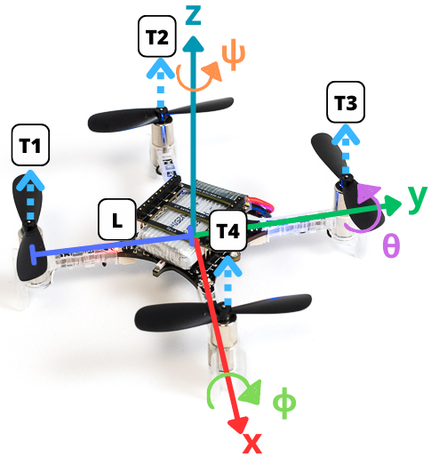
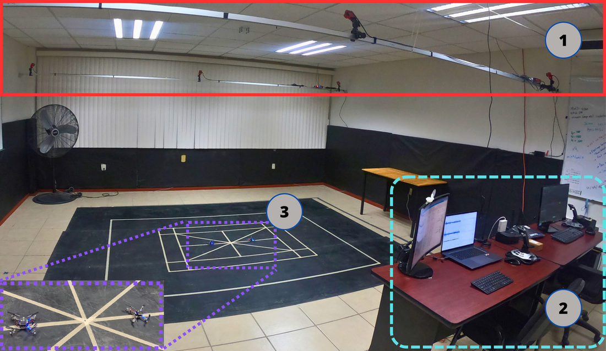
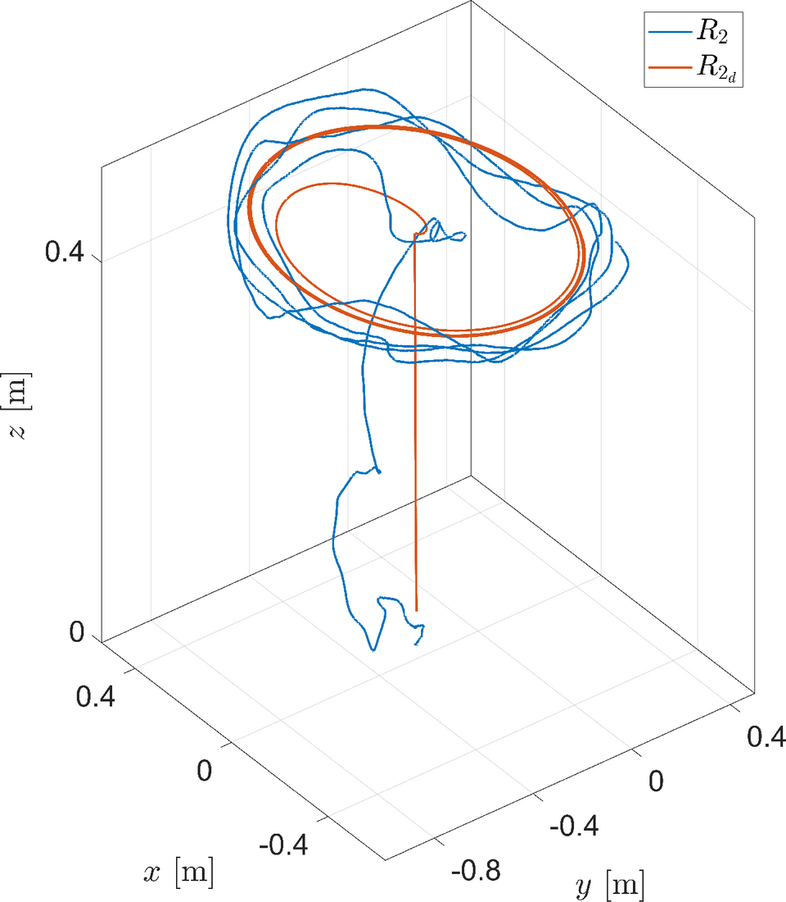
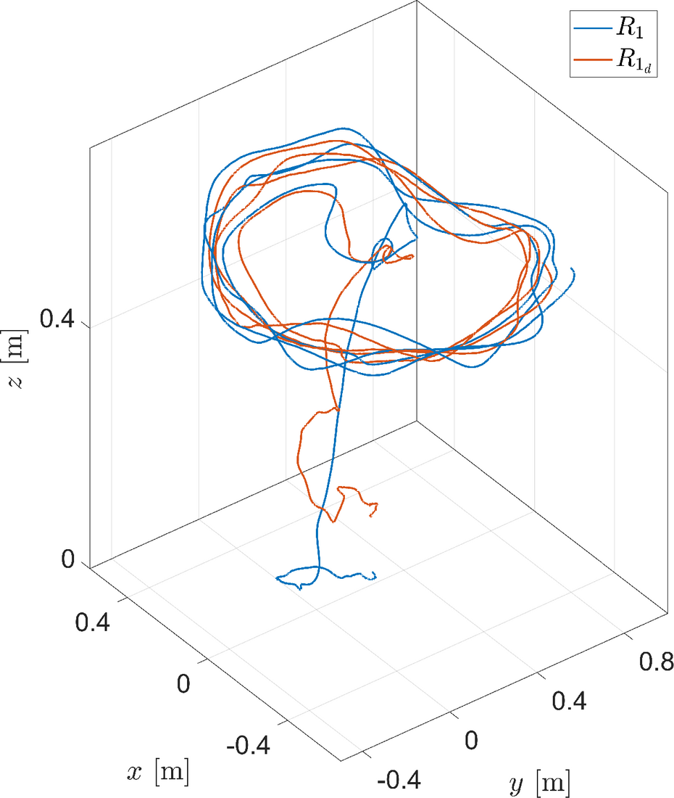
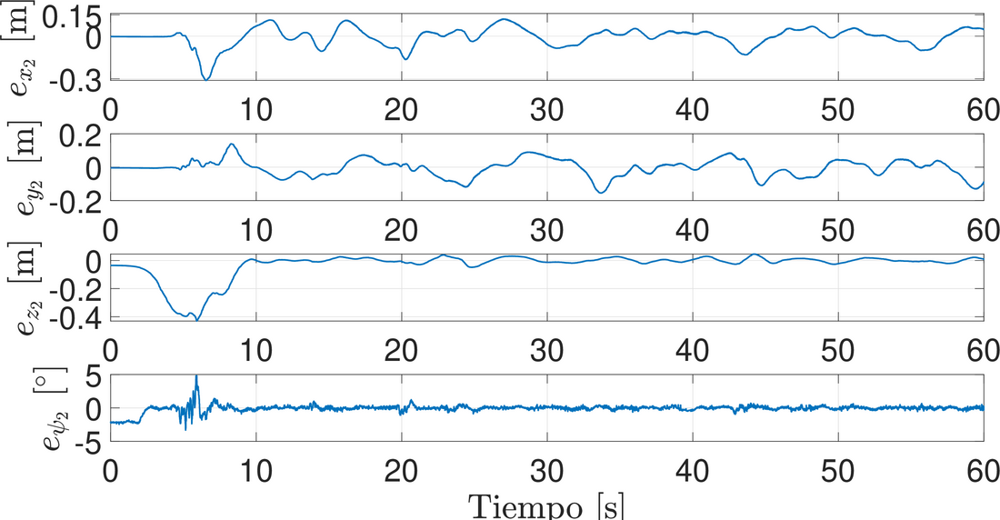
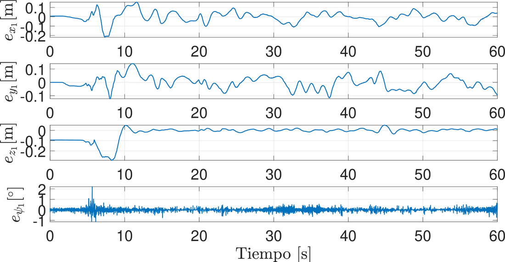
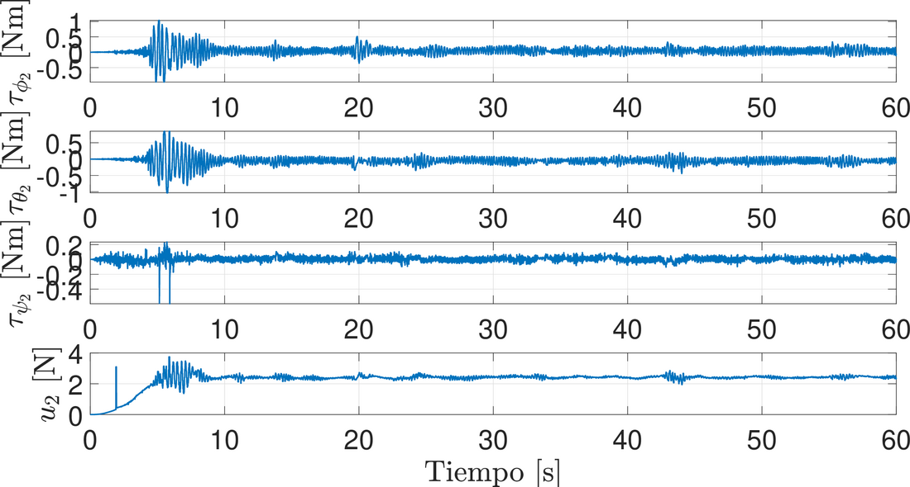
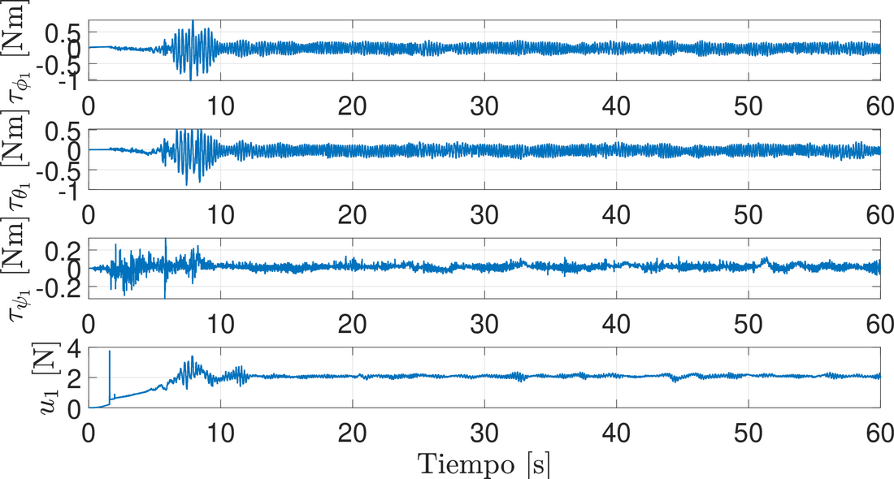

1 Introduction
Over the last two decades, research interest in cooperative control for multi-agent systems has grown exponentially in both the automatic control and robotics communities. The reason is the many potential applications in civil and military areas [1]. Examples include mapping and localization [2], target surveillance [3], search and rescue [4], smart agriculture [5], and cooperative transport [6].
The goal of cooperative control is to design a control law that accounts for the dynamics of the robots (agents) and the interaction topology among them, in order to accomplish the desired group task. Compared with a single robot, several robots working cooperatively on a group task provide robustness against individual failures. They also improve operational effectiveness and reduce costs, among other benefits [7]. This work analyzes the design of formation control for quadrotors.
In this context, there is a wide body of literature on control strategies to stabilize quadrotors and make them track trajectories. Several studies have proposed approaches and techniques to optimize their performance and responsiveness. Formation control is a fundamental technique in the cooperative control of multi-agent systems. Its objective is for all robots to reach and keep a predefined geometric configuration [8]. The work [9] studied formation control for quadrotors and proposed a trajectory planning algorithm for aggressive formation flight. In [10], a consensus-based controller was proposed to address the time-varying formation problem for multiple quadrotors.
The work [11] proposes a robust controller based on a sliding mode disturbance observer to achieve formation flight. However, this approach is limited to triangular configurations, which restricts the realization of some geometric patterns. In [12], a multi-agent control approach is proposed to form geometric patterns while avoiding obstacles and collisions through repulsive vector fields.
These studies show a variety of approaches and techniques to address the control and formation of UAVs, considering factors such as obstacle avoidance and external disturbances. Each of them advances research in this field and offers interesting perspectives for developing more robust and efficient control systems. However, very few show experimental results.
This work seeks trajectory tracking for a group of quadrotors that adopt a desired geometric pattern. It uses an approach based on sliding mode techniques, [13] and [14], which allows robust trajectory tracking by controlling the position and orientation of each quadrotor. The approach is validated experimentally.
The paper is organized as follows: Section 2 presents the problem statement, and Section 3 shows some concepts needed to develop the controller. Section 4 describes the selection of the virtual controllers for the reference signals, as well as the control strategy. The experimental validation of this proposal is in Section 5. Finally, the conclusions are presented in Section 6.
2 Problem statement

Consider a group of \(n\) quadrotors. The simplified dynamics of each one (see Figure 1, and [15] for modeling details) are given by:
\begin{align} \dot{\xi}_{1i} &= \xi_{2i} , \tag{1a}\\ \dot{\xi}_{2i} &=g_{\xi}(\eta_{1i})u_{mi}-G, \tag{1b}\\ \dot{\eta}_{1i} &= \eta_{2i}, \tag{1c}\\ \dot{\eta}_{2i} &= J_i\tau_i+\Xi_{i} w_{\eta}(\eta_{2i}), \tag{1d} \end{align}
where \(i = 1,2,\ldots,n = \overline{1,n}\), with \(n\) the number of quadrotors in the formation. \(\xi_{1i} := [x_i \quad y_i \quad z_i]^{\top}~ \in \mathbb{R}^3\), \(\xi_{2i} := [\dot{x_i} \quad \dot{y_i} \quad \dot{z_i}]^{\top}~ \in \mathbb{R}^3\), \(\eta_{1i} := [\phi_i \quad \theta_i \quad \psi_i]^{\top}~ \in \mathbb{R}^3\), \(\eta_{2i} := [\dot{\phi_i} \quad \dot{\theta_i} \quad \dot{\psi_i}]^{\top}~ \in \mathbb{R}^3\). The variables \(x_i, y_i \in \mathbb{R}\) are the coordinates in the horizontal plane, \(z_i \in \mathbb{R}\) is the vertical position, and \(\phi_i, \theta_i, \psi_i \in \mathbb{R}\) are the tilt angle about the X axis (roll), the tilt angle about the Y axis (pitch), and the rotation angle about the Z axis (yaw), respectively. The terms \(G := [0 \quad 0 \quad g]^{\top} \in ~\mathbb{R}^3\), \(J_{i} := \operatorname{diag}(J_{xi}^{-1}, J_{yi}^{-1}, J_{zi}^{-1}) \in \mathbb{R}^{3\times 3}\) and \(\tau_{i} := [\tau_{\phi_i} \quad \tau_{\theta_i} \quad \tau_{\psi_i}]^{\top} \in ~\mathbb{R}^3\) are the gravity vector, the inertia matrix and the torque vector. Here \(g\) is the gravitational acceleration, \(J_{x_i}\), \(J_{y_i}\) and \(J_{z_i}\) are the moments of inertia along the \(X\), \(Y\) and \(Z\) axes, and \(\tau_{\phi_i}\), \(\tau_{\theta_i}\) and \(\tau_{\psi_i} \in \mathbb{R}\) are the roll, pitch and yaw torques, respectively. The term \(u_{m_i} := {u_i}/{m_i}\), where \(u_i \in \mathbb{R}\) is the total thrust and \(m_i \in \mathbb{R}^+\) is the mass of each quadrotor. The matrix \(\Xi_{i} := \text{diag}(b_{\phi_{i}}, b_{\theta_{i}}, b_{\psi_{i}}) \in \mathbb{R}^{3\times 3}\) is given by the inertia coefficients \(b_{\phi_{i}} := ({J_{yi} - J_{zi}})/{J_{xi}}\), \(b_{\theta_{i}} := ({J_{zi} - J_{xi}})/{J_{yi}}\) and \(b_{\psi_{i}} := ({J_{xi} - J_{yi}})/{J_{zi}}\). The functions \(g_{\xi}(\eta_{1 i}) : \mathbb{R}^3 \rightarrow \mathbb{R}^3\) and \(w_{\eta}(\eta_{2 i}) : \mathbb{R}^3 \rightarrow \mathbb{R}^3\) are defined as follows: \(g_{\xi}(\eta_{1 i}) := [ \cos\phi_{i} \sin\theta_{i} \cos\psi_{i} + \sin\phi_{i} \sin\psi_{i} \,\, \cos\phi_{i} \sin\theta_{i} \sin\psi_{i} - \sin\phi_{i} \cos\psi_{i} \,\, \cos\phi_{i} \cos\theta_{i} ]^{\top}\) and \(w_{\eta}(\eta_{2 i}):=[\dot{\theta}_{i} \dot{\psi}_{i} \quad \dot{\phi}_{i}\dot{\psi}_{i} \quad \dot{\phi}_{i} \dot{\theta}_{i} ]^{\top}\). The “\(+\)” configuration is considered for the quadrotors.
The purpose of this paper is to solve the formation problem for a system of multiple quadrotors, and to show its feasibility with experimental results on Crazeflie nano quadrotor vehicles.
3 Preliminaries
Consider a time-varying differential equation [16], represented by: \[\frac{{dx(t)}}{{dt}} = f(t, x(t)), \quad t \geq t_0, \quad t_0 \in \mathbb{R}, \tag{2}\] where \(x(t) \in \mathbb{R}^n\) is the state vector, and \(f: \mathbb{R}_{\geq 0} \times \mathbb{R}^n \rightarrow \mathbb{R}^n\) is a function continuous with respect to \(x\) and measurable with respect to \(t\), with \(f(t, 0) = 0\). The solution of system (2), for an initial condition \(x_0 \in \mathbb{R}^n\) at time \(t_0 \in \mathbb{R}\), is assumed to be \(x(t, t_0, x_0)\), defined on some time interval \([t_0, t_0 + T)\) where \(0 \leq T < \infty\). Let \(\Omega\) be an open subset of \(\mathbb{R}^n\) such that \(0 \in \Omega\).
Definition. [1] A formation graph \(\mathcal{G}={\{N,E,C\}}\) consists of a set of nodes \(N = \{R_1, \ldots, R_n\}\), corresponding to each agent; a set of edges \(E = \{(R_j R_i) \in N \times N , i \neq j\}\), indicating that agent \(R_i\) receives information from agent \(R_j\); and a set of labels \(C = \{c_{ji} \in \mathbb{R}^3 ,|, (R_j R_i) \in N \times N, i \neq j\}\), representing a desired relative position vector of agent \(R_i\) with respect to agent \(R_j\). Also, let \(N_i \subset N\) be the set of detectable positions of agent \(R_i\).
Definition. [1] Let \(\mathcal{G} = \{N, E, C\}\) be a formation graph. The adjacency matrix \(\mathcal{A} \in \mathbb{R}^{n \times n}\), \(\mathcal{A} = [a_{ij}]\) of \(\mathcal{G}\) is defined as \[a_{ij} = \begin{cases} 1, & \text{if } (j, i) \in E, \\ 0, & \text{otherwise}. \end{cases}\]
Now, the following statements are introduced:
Agent \(R_n\) is the leader agent and the other agents are followers.
If \(N_n = \emptyset\), the leader agent receives no information from any other agent.
The desired formation vectors \(c_{ji}\) are time-invariant, that is, \(c_{ji} = [c_{jix} \quad c_{jiy} \quad c_{jiz}]^\top\).
The desired trajectory for agent \(R_n\) is defined as \(\xi_d = [x_d \quad y_d \quad z_d]^T\) and \(\eta_d = [\phi_{\star_n} \quad \theta_{\star_n} \quad \psi_d]^T\), where \(x_d\), \(y_d\), \(z_d\) and \(\psi_d \in \mathcal{C}^\infty\) are some desired trajectories to follow, while \(\phi_{\star_n}\) and \(\theta_{\star_n}\) are reference signals generated with virtual controls (designed later).
The leader is the only agent that knows the desired trajectory. In the graph under study, the leader has a directed spanning tree, that is, there are directed paths from the leader to all other agents.
Remark 2 indicates that no agent is isolated. This ensures that the agents converge to the desired formation using the minimum amount of information the agents need to know.
4 Control strategy
This section presents a control strategy based on three PID controllers and three continuous sliding mode controllers [14]. The proposed formation control design addresses the strategy for a group of quadrotors. The formation graph in Figure 2 is considered.

Define the tracking errors of the multi-agent system as: \[\begin{array}{ccc} \boldsymbol{e}_{\xi} = \tilde\xi_{1} - \xi_{d}, & \boldsymbol{\varepsilon}_{\xi} = \dot{\boldsymbol{e}}_{\xi}, & \boldsymbol{\epsilon}_{\xi} = \int_0^t{\boldsymbol{e}}_{\xi}(\tau)d\tau,\\ \boldsymbol{e}_{\eta} = \tilde\eta_{1} - \eta_{d}, &\boldsymbol{\varepsilon}_{\eta} = \dot{\boldsymbol{e}}_{\eta}, & \boldsymbol{\epsilon}_{\eta} = \int_0^t{\boldsymbol{e}}_{\eta}(\tau)d\tau, \end{array}\] with \(\tilde\xi_{1} = [\xi_{11} \quad \xi_{12} \quad ... \quad \xi_{1n} ]^\top\), \(\xi_{d} = \mathcal{A}\tilde\xi_{1} + \bar{\xi}_{d}\), \(\bar{\xi}_{d} = [\boldsymbol{C}_{n,1} \quad \boldsymbol{C}_{n,2} \quad ... \quad \boldsymbol{C}_{n,n-1} \quad \xi_d]^\top\), \(\tilde\eta_{1} = [\eta_{11} \quad \eta_{12} \quad ...\) \(\quad \eta_{1n} ]^\top\), and \(\eta_{d} = [\eta_{d1} \quad \eta_{d2} \quad ... \quad \eta_{dn} ]^\top\); where \(\boldsymbol{C}_{n,i}\in \mathbb{R}^3\) is the formation vector of the \(i\)-th agent with respect to the leader, \(\eta_{dk} = [\phi_{\star i} \quad \theta_{\star i} \quad \psi_{n}]^\top\), with \(i = \overline{1,n-1}\), and \(\eta_{dn} = [\phi_{\star n} \quad \theta_{\star n} \quad \psi_{d}]^\top\). \(\mathcal{A} \in \mathbb{R}^{3n \times 3n}\) has the following form: \[\mathcal{A} = \left[ \begin{array}{ccccc} 0 & 0 & \ldots & 0 & 1 \\ 0 & 0 & \ldots & 0 & 1 \\ \vdots & \vdots & \ddots & \vdots & \vdots \\ 0 & 0 & \ldots & 0 & 1 \\ 0 & 0 & \ldots & 0 & 0 \\ \end{array} \right]\]
It is well known that a quadrotor is an underactuated system (four inputs for six degrees of freedom). Two of the degrees of freedom are therefore “controlled” independently. Usually, these two degrees of freedom are pitch and roll, designed as reference signals that facilitate the desired task of the quadrotor (regulation or tracking). These reference signals, denoted \(\phi_{\star i}\) and \(\theta_{\star i}\), and the control inputs \(u_{m_{i}}\) and \(\tau_{i}\), must be designed so that each agent is at its desired position and angle at every instant. To obtain the reference signals of the \(i\)-th quadrotor, a virtual controller \(\nu_{i} := [\nu_{x_{i}} \quad \nu_{y_{i}} \quad \nu_{z_{i}}]^\top\) is introduced in the position error dynamics. Therefore:
\begin{align} \dot{\boldsymbol{e}}_{\xi i} &= \boldsymbol{\varepsilon}_{\xi i}, \quad \boldsymbol{\dot{\varepsilon}}_{\xi i} = \nu_{i} + \omega_{\xi i}(\eta_{1 i},u_{m i},\nu_{ i})- \ddot{{\xi}}_{d i} \tag{3a}\\ \dot{\boldsymbol{e}}_{\eta i} &= \boldsymbol{\varepsilon}_{\eta i}, \quad \boldsymbol{\dot{\varepsilon}}_{\eta i} = J_{i}\tau_{i}+\Xi_{i} w_{\eta}(\eta_{2 i}) - \ddot{{\eta}}_{d i} \tag{3b} \end{align}
where \(\omega_{\xi i}(\eta_{1i},u_{mi},\nu_i) = g_{\xi}(\eta_{1 i})u_{m i} - G -\nu_{i}\), \(\ddot{\xi}_{d i} = [\ddot{\xi}_{d x i} \quad \ddot{\xi}_{d y i} \quad \ddot{\xi}_{d z i}]^{\top}\), and \(\ddot{\eta}_{d i} = [\ddot{\phi}_{\star i} \quad \ddot{\theta}_{\star i} \quad \ddot{\Psi}_{i}]^{\top}\); then \(\nu_{i}\) can be chosen as:
\begin{align} \nu_{x_i} &= u_{m_i} (\cos{\phi_{\star_i}}\sin{\theta_{\star_i}}\cos{\Psi_i} + \sin{\phi_{\star_i}}\sin{\Psi_i}), \tag{4a}\\ \nu_{y_i} &= u_{m_i} (\cos{\phi_{\star_i}}\sin{\theta_{\star_i}}\sin{\Psi_i} - \sin{\phi_{\star_i}}\cos{\Psi_i}), \tag{4b}\\ \nu_{z_i} &= u_{m_i} (\cos{\phi_{\star_i}}\cos{\theta_{\star_i}}) - g \tag{4c} \end{align}
where \(i = \overline{1,n}\), and \(\Psi_{i} = \psi_{n}\), except for \(i=n\), where \(\Psi_{n} = \psi_{d}\). Solving (4), the total thrust and the reference signals of each agent are given by:
\begin{align} u_i&=m_i \sqrt{\nu_{x i}^2 + \nu_{y i}^2 +(\nu_{z i}+g)^2}, \tag{5a}\\ \phi_{\star i} &= \arcsin{(u_{m_i}^{-1}(\nu_{x i}\sin{\Psi_i}-\nu_{y i}\cos{\Psi_i}))}, \tag{5b}\\ \theta_{\star i} &= \arctan{((\nu_{z i} + g)^{-1}(\nu_{x i}\cos{\Psi_i}+\nu_{y i}\sin{\Psi_i}))}. \tag{5c} \end{align}
The signals generated from (5) help the system achieve the desired flight (regulation or tracking). The objective is now to design the virtual controllers \(\nu_{i}\) and the control input \(\tau_{i}\) so that the tracking error vector \(e := [\boldsymbol{e}_\xi \quad \boldsymbol{\varepsilon}_{\xi} \quad \boldsymbol{e}_\eta \quad \boldsymbol{\varepsilon}_\eta]^\top\) converges to zero.
To this end, the virtual controllers \(\nu_{x_i}\), \(\nu_{y_i}\) and \(\nu_{z_i}\) are designed as PIDs, given by:
\begin{align} \nu_{x_i} &= K_{0_xi}\epsilon_{x_i} + K_{1_xi}e_{x_i} + K_{2_xi}\varepsilon_{x_i} + \ddot{\xi}_{dxi}, \tag{6a}\\ \nu_{y_i} &= K_{0_yi}\epsilon_{y_i} + K_{1_yi}e_{y_i} + K_{2_yi}\varepsilon_{y_i} + \ddot{\xi}_{dyi}, \tag{6b}\\ \nu_{z_i} &= K_{0_zi}\epsilon_{z_i} + K_{1_zi}e_{z_i} + K_{2_zi}\varepsilon_{z_i} + \ddot{\xi}_{dzi}, \tag{6c} \end{align}
where \(K_{j_xi}\), \(K_{j_yi}\), \(K_{j_zi}\), with \(i = \overline{1,n}\) and \(j = \overline{0,2}\), have the following form: \[\begin{pmatrix} 0 & 1 & 0 \\ 0 & 0 & 1 \\ K_{0pi}&K_{1pi}&K_{2pi} \end{pmatrix}. \tag{7}\]
with \(p = x,y,z\), and with values assigned so that they are Hurwitz. The torques \(\tau_{i} = [\tau_{\phi_i} \quad \tau_{\theta_i} \quad \tau_{\psi_i}]^\top\) have the following structure
\begin{align} \tau_{\phi_i} &= J_{x i} (\bar{\tau}_{\phi_{i}} - b_{\phi_i} \dot{\theta}_{\star i}\dot{\Psi}_{i}), \tag{8a}\\ \tau_{\theta_i}&= J_{y i} (\bar{\tau}_{\theta_{i}} - b_{\theta_i} \dot{\phi}_{\star i}\dot{\Psi}_{i}), \tag{8b}\\ \tau_{\psi_i} &= J_{z i} (\bar{\tau}_{\psi_{i}} - b_{\psi_i} \dot{\phi}_{\star i}\dot{\theta}_{\star i} + \ddot{\Psi}_i). \tag{8c} \end{align}
where \(\bar{\tau}_{a i}\), with \(a = \phi, \theta, \psi\), is designed as a Continuous Twisting (CT) controller [17]:
\begin{align} \bar{\tau}_{a i} &= v_{a i} - k_{a i 0} \lceil \boldsymbol{e}_\eta \rfloor ^{\frac{1}{3}} - k_{a i 1} \lceil \boldsymbol{\varepsilon}_\eta \rfloor ^{\frac{1}{2}} \tag{9a}\\ \dot{v}_{a i} & = -k_{a i 2} \lceil \boldsymbol{e}_\eta \rfloor ^0 -k_{a i 3} \lceil \boldsymbol{\varepsilon}_\eta \rfloor ^0 \tag{9b} \end{align}
with \(k_{a i j}>0\), for \(j = 1,2,3\), and
\begin{align} v_{\phi i} &= (J_{x i})^{-1}(b_{\phi_i} \dot{\theta}_{\star i}\dot{\Psi}_{i}) \tag{10a}\\ v_{\theta i} &= (J_{y i})^{-1}(b_{\theta_i} \dot{\phi}_{\star i}\dot{\Psi}_{i}) \tag{10b}\\ v_{\psi i} &= (J_{z i})^{-1}(b_{\psi_i} \dot{\phi}_{\star i}\dot{\theta}_{\star i} + \ddot{\Psi}_i). \tag{10c} \end{align}
Using (5)-(6) and (9) on system (1), system (3a) is Input-to-State Stable (ISS) with respect to \(\boldsymbol{e}_{\eta}\), and system (3b) is UFTS. The stability proofs can be obtained as presented in [13] and [14]. There it was shown that the tracking error dynamics of system (1), under the control law (9), which has the structure of the Continuous Twisting (CT) Algorithm [18], is UFTS.
5 Experimental validation

To demonstrate the effectiveness of the proposed controller, it was implemented on a system of two Crazyflie nano quadrotors. The experimental system has three main components: (1) an OptiTrack Motion Capture positioning system; (2) an external computer for the position controllers; (3) two Crazyflie nano quadrotors (see Figure 3). The attitude controller runs onboard each Crazyflie, while the position controller runs under ROS (Robot Operating System) on an external computer. This computer sends the values of \(\phi_{\star i}\), \(\theta_{\star i}\), \(\dot{\psi}_{d}\) and \(u_{i}\) as setpoints to each Crazyflie. The model parameters are: \(g = 9.8\) [m/s\(^2\)], \(m_{i} = 0.032\) [kg], \(J_{x i} = 9.827e^{-05}\)[kg m\(^2\)], \(J_{y i} = 8.185e^{-05}\)[kg m\(^2\)], \(J_{z i} = 9.613e^{-05}\)[kg m\(^2\)]. The desired trajectory is given by: \(x_d(t) = r (\arctan(\varphi) + \arctan(t - \varphi)) \cos(\omega t) - 0.25\), \(y_d(t) = r (\arctan(\varphi) + \arctan(t - \varphi)) \sin(\omega t)\), \(z_d(t) = (h/2) (1 + \tanh(t-2.5)) + 0.05\) and \(\psi_d(t) = 0\), with \(r=0.2\)[m], \(\varphi = 15\) [s] and \(\omega=\pi/5\)[rad/s]. The initial conditions of the agents are \(R_1 = [0.25 \quad 0 \quad 0]^\top\) and \(R_2 = [-0.25 \quad 0 \quad 0]^\top\), and the formation vector is \(\boldsymbol{C}_{21}=[0.5 \quad 0 \quad 0.1]^\top\). The gains of the selected control strategies are shown in Table 1. Figures 4 and 5 show the trajectory tracking of the two agents (leader and follower, respectively), together with their desired trajectories. The tracking error of nano quadrotor \(R_2\) with respect to the desired trajectory is shown in Figure 6. The formation error of nano quadrotor \(R_1\) with respect to quadrotor \(R_2\) is shown in Figure 7. In both cases, the nano quadrotors behave more abruptly at the start of the experiment. This is due to the initial conditions (takeoff from the ground, starting from rest) and to ground effect. Once they reach the desired height, the error signals stay around zero. Figures 8 and 9 show the control signals for the Leader (\(R2\)) and the Follower (\(R1\)). The behavior is more oscillatory in the transient phase at the start of the experiment. The peaks in the signals are due to losses of the position information of the nano quadrotors.
| \(K_{1_x i}\) | \(K_{1_y i}\) | \(K_{1_z i}\) | \(k_{\phi i 0}\) | \(k_{\theta i 0}\) | \(k_{\psi i 0}\) |
|---|---|---|---|---|---|
| \(28.5\) | \(28.5\) | \(75\) | \(2\) | \(2\) | \(7\) |
| \(K_{0_x i}\) | \(K_{0_y i}\) | \(K_{0_z i}\) | \(k_{\phi i 1}\) | \(k_{\theta i 1}\) | \(k_{\psi i 1}\) |
| \(18.5\) | \(18.6\) | \(35\) | \(8\) | \(8\) | \(10\) |
| \(K_{2_x i}\) | \(K_{2_y i}\) | \(K_{2_z i}\) | \(k_{\phi i 2}\) | \(k_{\theta i 2}\) | \(k_{\psi i 2}\) |
| \(10\) | \(10\) | \(38\) | \(3\) | \(3\) | \(2\) |
| \(k_{\phi i 3}\) | \(k_{\theta i 3}\) | \(k_{\psi i 3}\) | |||
| \(2\) | \(2\) | \(1\) |






6 Conclusion
This work presented the experimental validation of a control law based on graph theory, PIDs and Continuous Sliding Modes (Continuous Twisting) for a group of two Crazyflie nano quadrotors. A leader-follower scheme was implemented to evaluate the effectiveness of this control strategy in the formation and tracking of the quadrotors. Future work will consider disturbances and uncertainties from the modeling stage.